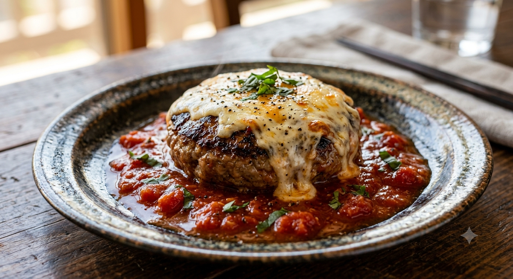

HISTORY
1968年、盛岡。
13坪の挑戦がはじまった。
創業者・庄司昭夫が大阪での修行を経て、岩手県盛岡市に開業した「ハンバーガーとサラダの店・べる」。
「マクドナルドが来る前に、日本独自のハンバーグ文化を」という熱い想い。1973年、現在も愛される「ハンバーグディッシュ」の原型がこの店で産声を上げました。
あの日、盛岡の人々を驚かせた感動を、今も私たちはこの場所で守り続けています。

Original Shop
第1号店